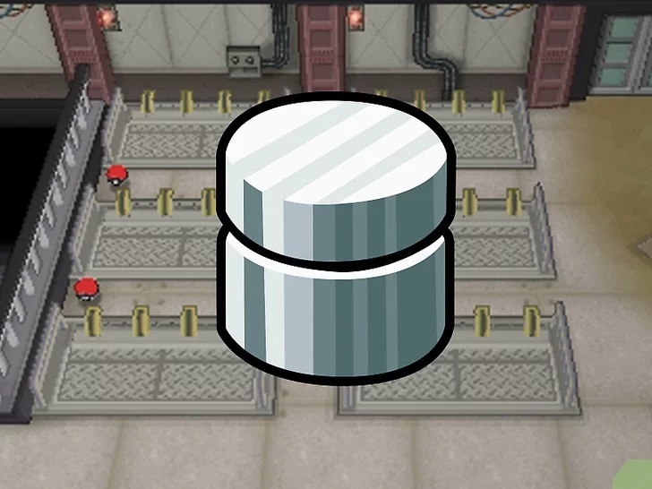
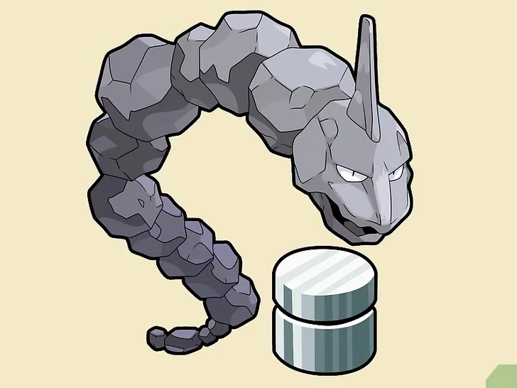

Capture o Onix. Nos jogos Omega Ruby e Alpha Sapphire, o Onix só pode ser capturado depois de se derrotar o Pokémon lendário do jogo (Groudon no Omega Ruby e Kyogre no Alpha Sapphire). Ele pode ser encontrado na Granite Cave. Depois de ganhar a Eon Flute e liberar os Pokémon Latios e Latias, também é possível encontrá-lo nas Mirage Caves.
Obtenha o Metal Coat. Trata-se de um item encontrado na sala do gerador em New Mauville. Se tiver sorte, você também pode encontrá-lo equipado em alguns Pokémon selvagens como Magnemite, Skarmory e Bronzors.[2] Os Magnemites podem ser encontrados em New Mauville e na Route 110. Os Skarmory podem ser encontrados na Route 113. O Bronzor é encontrado no Mt. Pyre, mas só depois de derrotar o Pokémon lendário do jogo.
Equipe o Onix com o Metal Coat através do menu Pokémon. Ele precisa estar segurando o item para evoluir.